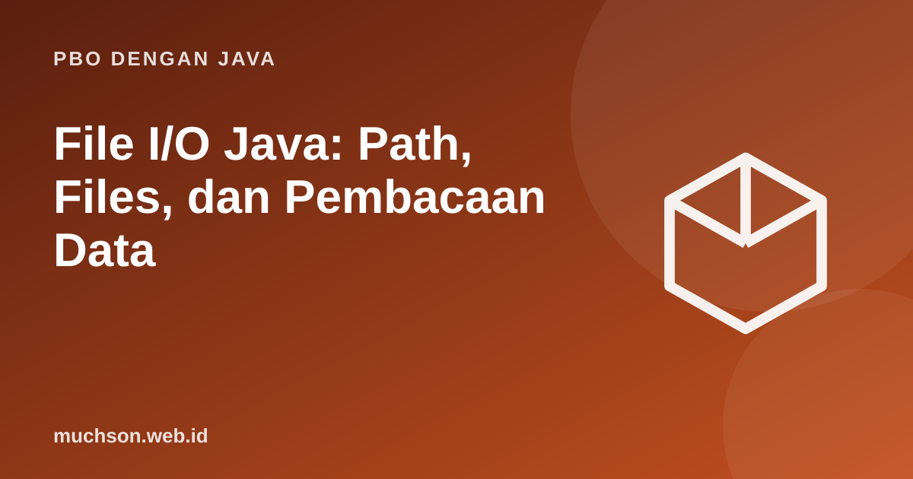

Beranda › Artikel › PBO dengan Java
PBO dengan JavaFile I/O Java: Path, Files, dan Pembacaan Data
Program yang tidak bisa menyimpan dan membaca data hanya berguna selama berjalan. API modern java.nio.file (Path dan Files) menggantikan banyak kode lama dengan metode singkat dan aman, asalkan kita memahami encoding dan penutupan resource.
Sebaiknya sudah paham: exception handling, String, collections

Setelah membaca dan mencoba materi ini, Anda mampu:
- membedakan Path dan Files serta operasi dasarnya
- membaca dan menulis berkas teks dengan encoding UTF-8
- memproses berkas besar baris demi baris tanpa memuat seluruhnya
- menangani IOException dengan try-with-resources
- membaca dan menulis CSV sederhana
Path dan Files
import java.io.IOException;
import java.nio.charset.StandardCharsets;
import java.nio.file.*;
import java.util.List;
public class Main {
public static void main(String[] args) throws IOException {
Path dir = Files.createTempDirectory("latihan"); // folder sementara
Path berkas = dir.resolve("catatan.txt"); // menggabungkan path
Files.writeString(berkas, "baris satu\nbaris dua\n", StandardCharsets.UTF_8);
Files.writeString(berkas, "baris tiga\n", StandardOpenOption.APPEND); // menambah di akhir
System.out.println(Files.exists(berkas) + " " + Files.size(berkas) + " byte");
List<String> baris = Files.readAllLines(berkas, StandardCharsets.UTF_8);
System.out.println(baris);
System.out.println(berkas.getFileName() + " di dalam folder bernama latihan? " + berkas.getParent().getFileName().toString().startsWith("latihan"));
Files.delete(berkas);
Files.delete(dir);
}
}true 32 byte
[baris satu, baris dua, baris tiga]
catatan.txt di dalam folder bernama latihan? true
Berkas besar: baca per baris
readAllLines memuat semuanya ke memori. Untuk berkas besar, baca bertahap dengan BufferedReader atau Files.lines (stream malas) dan tutup sumbernya.
import java.io.*;
import java.nio.charset.StandardCharsets;
import java.nio.file.*;
import java.util.stream.Stream;
public class Main {
public static void main(String[] args) throws IOException {
Path berkas = Files.createTempFile("log", ".txt");
try (BufferedWriter w = Files.newBufferedWriter(berkas, StandardCharsets.UTF_8)) {
for (int i = 1; i <= 5; i++) {
w.write((i % 2 == 0 ? "ERROR" : "INFO") + " kejadian " + i);
w.newLine();
}
} // otomatis ditutup
int error = 0;
try (BufferedReader r = Files.newBufferedReader(berkas, StandardCharsets.UTF_8)) {
String baris;
while ((baris = r.readLine()) != null) if (baris.startsWith("ERROR")) error++;
}
System.out.println("jumlah ERROR: " + error);
try (Stream<String> s = Files.lines(berkas)) { // stream wajib ditutup
System.out.println(s.filter(l -> l.contains("INFO")).count() + " baris INFO");
}
Files.delete(berkas);
}
}jumlah ERROR: 2
3 baris INFO
Selalu sebutkan encoding (UTF-8) saat membaca atau menulis teks. Bergantung pada pengaturan bawaan sistem membuat program berperilaku berbeda di Windows dan Linux, dan karakter seperti é atau huruf non-Latin bisa rusak.
Contoh: mengolah CSV
import java.io.IOException;
import java.nio.file.*;
import java.util.*;
import java.util.stream.*;
record Nilai(String nama, int uts, int uas) {
double akhir() { return 0.4 * uts + 0.6 * uas; }
}
public class Main {
static Nilai urai(String baris) {
String[] kolom = baris.split(",");
return new Nilai(kolom[0].trim(), Integer.parseInt(kolom[1].trim()), Integer.parseInt(kolom[2].trim()));
}
public static void main(String[] args) throws IOException {
Path csv = Files.createTempFile("nilai", ".csv");
Files.write(csv, List.of("nama,uts,uas", "Ani,80,90", "Budi,70,65", "Citra,95,88", "tidak,valid"));
List<Nilai> daftar = new ArrayList<>();
List<String> gagal = new ArrayList<>();
for (String baris : Files.readAllLines(csv).stream().skip(1).toList()) { // lewati header
try { daftar.add(urai(baris)); }
catch (RuntimeException e) { gagal.add(baris); } // data kotor dicatat, bukan menghentikan program
}
daftar.stream().sorted(Comparator.comparingDouble(Nilai::akhir).reversed())
.forEach(n -> System.out.printf("%-6s %.1f%n", n.nama(), n.akhir()));
System.out.println("baris bermasalah: " + gagal);
Files.delete(csv);
}
}Citra 90.8
Ani 86.0
Budi 67.0
baris bermasalah: [tidak,valid]
Kelas lama yang sering ditemui
| Kebutuhan | Cara modern | Sering ditemui di kode lama |
|---|---|---|
| Representasi lokasi berkas | Path, Paths.get / Path.of | java.io.File |
| Baca seluruh isi kecil | Files.readString / readAllLines | FileReader + BufferedReader |
| Tulis teks | Files.writeString / newBufferedWriter | FileWriter / PrintWriter |
| Telusuri folder | Files.walk / Files.list | File.listFiles |
1. Tulis program yang menghitung jumlah baris pada sebuah berkas teks.
2. Salin berkas A ke B tanpa menimpa jika B sudah ada.
Files.copy(a, b) melempar FileAlreadyExistsException bila B ada, kecuali ditambah REPLACE_EXISTING.3. Apa bedanya Path.of("a/b").resolve("c") dan Path.of("a/b").resolveSibling("c")?
4. Mengapa membaca baris tidak boleh mengasumsikan semuanya valid?
- Path menyatakan alamat; Files melakukan operasinya.
- Gunakan try-with-resources dan sebutkan encoding UTF-8.
- Berkas besar: baca bertahap, bukan sekaligus.
- Waspadai data kotor dan batasan split untuk CSV.
Tanya jawab
Bagaimana menulis objek ke berkas?
Bagaimana cara melihat folder kerja?
Apa bedanya stream byte dan karakter?
Referensi
- Oracle: Basic I/O (Java Tutorials)
- Java SE API: java.nio.file.Files
- dev.java: Reading and Writing Files
- Joshua Bloch, Effective Java (edisi ke-3, Addison-Wesley, 2018)